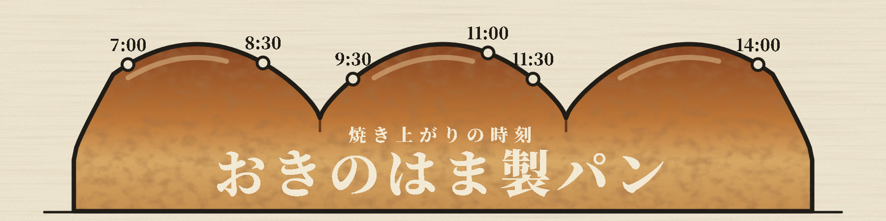
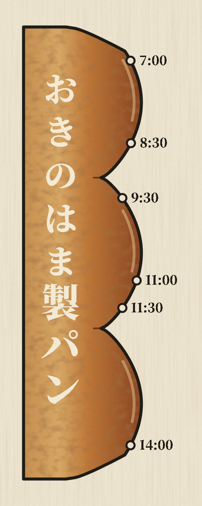
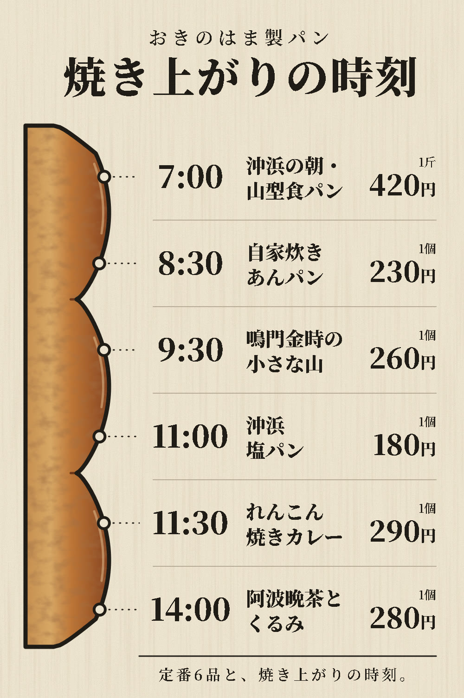
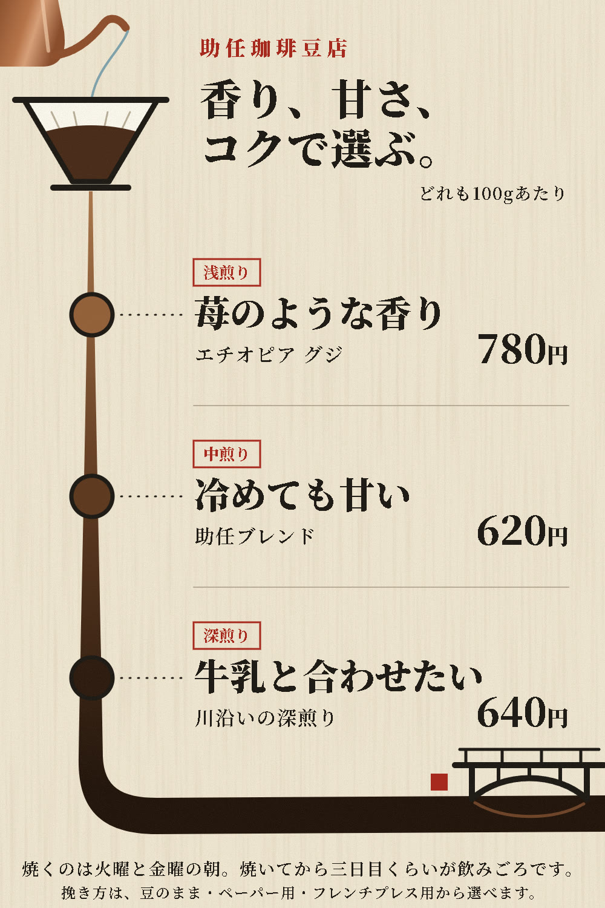

看板 v9：おきのはまの作り直しと、2店の店先メニュー
写真の切り抜きは使わず、助任の看板と同じく、手で描いた絵と字だけで作りました。画像を押すと実寸で開きます。
おきのはま製パン：横長看板
山型食パンの三つの山の稜線を、朝7時から14時までの時間の線にしました。点は焼き上がりの時刻です。遠くからは大きな食パン、近くでは何時に何が焼けるかが読めます。

おきのはま製パン：袖看板
同じ食パンを縦に立て、上から下へ時刻が進みます。店名はパンの中に縦書きで入れました。

店先のメニュー（2店）
おきのはまは、立てた食パンの稜線の点から、その時刻に焼けるパンと値段へつなぎました。助任は、ドリッパーの一筋が下へ流れるほど色が深くなり、浅煎り・中煎り・深煎りの豆がその色の場所に並びます。最後は横長看板と同じく、助任川と橋のたもとの店になります。




値段・時刻・銘柄・焙煎日は、それぞれの見本サイトの記載と合わせています。